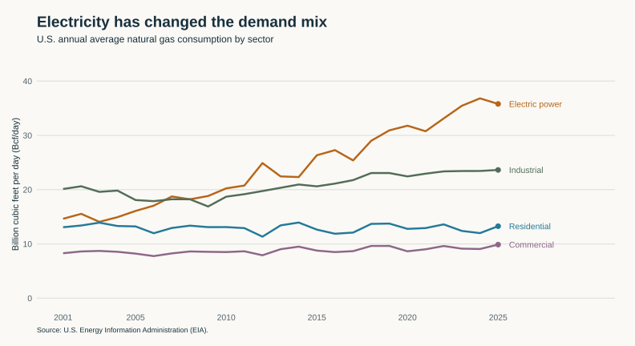

Electricity drives the growth in gas use
Gas use by power plants rose from an average of 15.1 to 34.4 Bcf/day between 2001 to 2005 and 2021 to 2025. Residential use stayed close to 13 Bcf/day. The annual series shows how that change developed over the full 25 years.

Industrial consumption also increased, while residential and commercial use changed much less. Power plants became a larger source of demand through several periods of growth, with occasional declines, including in 2025. That shift raises a seasonal question: as electricity accounts for more gas use, when during the year is that gas needed?